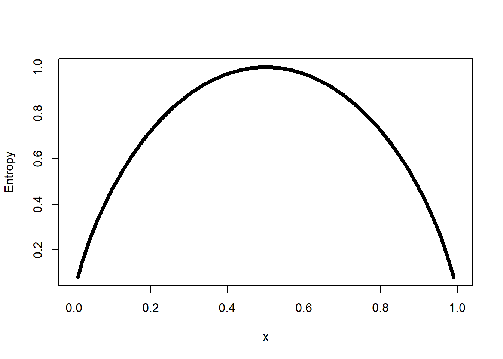

Chapter 6 Decision Tree
Decision tree are class of non parametric model with generaly a catégorical dependant variable. Globalement c’est un abre de decision qui se split a chaque neaux selon une variable selectionné suivant différentes metrics. Decision tree consists of two types of nodes :
- leaf node : indicate class defined by the response variable
- decision node : which specifies some test on a single attributes
DT use recursive divide and conquer approach.
6.1 Type of décision tree
- Regression tree : variables réponse continue. Objectif est de split a chaque itération en minimisant les residual sum squares RSS.
- Recursively split the feature vector space (X1, X2, ., Xp) into distinct and non-overlapping regions
- For new observations falling into the same region, the prediction is equal to the mean of all the training observations in that region.
- Classification tree : variables categorielle
- We use classification error rate for making the splits in classification trees.
- Instead of taking the mean of response variable in a particular region for prediction, here we use the most commonly occurring class of training observation as a prediction methodology.
6.2 Decision measures : measure of node purity (heterogeneity of the node)
- Gini Index : $ G = p_{ml}*(1-P_{mp}) $ where, pmk is the proportion of training observations in the mth region that are from the kth class
- Entropy function : $ E = -
curve(-x *log2(x) -(1 -x) *log2(1 -x), xlab ="x", ylab ="Entropy", lwd =5)
Observe that both measures are very similar, however, there are some differences: - Gini-index is more suitable to continuous attributes and entropy in case of discrete data. - Gini-index works well for minimizing misclassifications. - Entropy is slightly slower than Gini-index, as it involves logarithms (although this doesn’t really matter much given today’s fast computing machines)
- Information gain : Measure du changement de l’entrepy entre avant et apres le split
6.3 Decision tree learning methods
- Iterative Dichotomizer 3 : most popular décision tree algorithms
- Calculate entropy of each attribute using training observations
- Split the observations into subsets using the attribute with minimum entropy or maximum information gain.
- The selected attribute becomes the decision node.
- Repeat the process with the remaining attribute on the subset.
pas super performant pour le multiclass classification
- C5.0 algorithm : il split les noeuds en 3 possibilités
- All observations are a single classe => identify class
- No class => use the most frequent class at the parent of this node
- mixtureof classes => a test based on single attribute (use information gain)
Repete jusqu’au moment outout les observations sont correctement classifié. On utilise pruning pour réduire l’overfitting. Mais avec C50 on utilise pas pruning car algorithm iterate back and replace leaf that dosn’t increase the information gain.
- Classification and regression tree - CART : Use residual sum square as the node impurity measure. SI utilisation pour pure classification GINI indix peut etre plus approprié comme mesure d’impurité
- Start the algorithm at the root node.
- For each attribute X, find the subset S that minimizes the residual sum of square (RSS) of the two children and chooses the split that gives the maximum information gain.
- Check if relative decrease in impurity is below a prescribed threshold.
- If Yes, splitting stops, otherwise repeat Step 2.
on peut aussi utiliser un parametre de complexité (cp) : any split that does not decrease the overall lack of fit by a factor of cp would not be attempted by the model
- Chi-square automated interaction detection - CHAID
Ici uniquement pour variable catégoriel. variables continues sont catégorisé par optimal bining.
L’algorithm fusion les catégories sinon significative avec la variables dépendante. De même si une catégorie a trop peu d’observation, elle est fusionnée avec la catégorie la plus similaire mesurée par la pval tu test chi2. CHAID détecte l’interaction entre variables dans un jeu de données. En utilisant cette technique on peut établir des relations de dépendance entre variable;
- L’algorithme CHAID2 se déroule en trois étapes :
- préparation des prédicteurs : transformation en variable catégoriel par optimal bining
- fusion des classes : pour chaque prédicteur, on determine les catégorie les plus semblable par rapport a la variables dependante. (chi2) Repetition de l’étape jusqu’àavoir une catégorie fusionnée significative non indépendante. Ajuste les pval par bonferonni si des classe ont été fusionnée
- sélection de la variable de séparation : choisi la variable avec la plus faible pval (au test indépendante chi2 ajusté avec bonferonni), la plus significative. Processus iteratif. Si pval dépasse un seuil, le processus prend fin
- stopping :
- Si node est pure:no split
- pval > seuil : nosplit
library(C50)
library(splitstackshape)
library(rattle)
library(rpart.plot)
library(data.table)
library(gmodels)
### Data prep ###
Data_Purchase <-fread("C:/Users/007/Desktop/Data science with R/R/Dataset/Chapter 6/PurchasePredictionDataset.csv",header=T,verbose =FALSE, showProgress =FALSE)
table(Data_Purchase$ProductChoice)##
## 1 2 3 4
## 106603 199286 143893 50218#Pulling out only the relevant data to this chapter
Data_Purchase <-Data_Purchase[,c("CUSTOMER_ID","ProductChoice","MembershipPoints","IncomeClass","CustomerPropensity","LastPurchaseDuration")]
#Delete NA from subset
Data_Purchase <-na.omit(Data_Purchase)
Data_Purchase$CUSTOMER_ID <-as.character(Data_Purchase$CUSTOMER_ID)
#Stratified Sampling
Data_Purchase_Model<-stratified(Data_Purchase, group=c("ProductChoice"),size =10000,replace=FALSE)
table(Data_Purchase_Model$ProductChoice)##
## 1 2 3 4
## 10000 10000 10000 10000Data_Purchase_Model$ProductChoice <-as.factor(Data_Purchase_Model$ProductChoice)
Data_Purchase_Model$IncomeClass <-as.factor(Data_Purchase_Model$IncomeClass)
Data_Purchase_Model$CustomerPropensity <-as.factor(Data_Purchase_Model$CustomerPropensity)
#Build the decision tree on Train Data (Set_1) and then test data (Set_2) will be used for performance testing
set.seed(917)
train <- Data_Purchase_Model[sample(nrow(Data_Purchase_Model),size=nrow(Data_Purchase_Model)*(0.7), replace =TRUE, prob =NULL),]
train <-as.data.frame(train)
test <-Data_Purchase_Model[!(Data_Purchase_Model$CUSTOMER_ID %in%train$CUSTOMER_ID),]
# save(train, file="./save/train.RData")
# save(test, file="./save/test.RData")
library(RWeka)
# WPM("refresh-cache")
# WPM("install-package", "simpleEducationalLearningSchemes")### ID3 model ###
# ID3 <-make_Weka_classifier("weka/classifiers/trees/Id3")
# ID3Model <-ID3(ProductChoice ~CustomerPropensity +IncomeClass ,data = train)
#
# v = summary(ID3Model)
#
# saveRDS(v, "ID3Model.rds")
ID3model <- readRDS("./save/ID3Model.rds")
ID3model##
## === Summary ===
##
## Correctly Classified Instances 9268 33.1 %
## Incorrectly Classified Instances 18732 66.9 %
## Kappa statistic 0.1078
## Mean absolute error 0.3646
## Root mean squared error 0.427
## Relative absolute error 97.2403 %
## Root relative squared error 98.6105 %
## Total Number of Instances 28000
##
## === Confusion Matrix ===
##
## a b c d <-- classified as
## 4792 315 1439 509 | a = 1
## 3812 494 1812 898 | b = 2
## 2701 421 2485 1298 | c = 3
## 2918 416 2193 1497 | d = 4# library(gmodels)
# purchase_pred_test <-predict(ID3model, test)
# CrossTable(test$ProductChoice, purchase_pred_test, prop.chisq =FALSE,
# prop.c =FALSE, prop.r =FALSE,
# dnn =c('actual default', 'predicted default'))
# train set accurancy : 33.3036%
# test set accurancy : 0.159+0.004+0.086+ 0.073 = 33.2%
# test and train are proche : sign of no overfitting### C50 model ###
model_c50 <-C5.0(train[,c("CustomerPropensity","LastPurchaseDuration", "MembershipPoints")],
train[,"ProductChoice"],
control =C5.0Control(CF =0.001, minCases =2))
summary(model_c50)##
## Call:
## C5.0.default(x = train[, c("CustomerPropensity",
## "LastPurchaseDuration", "MembershipPoints")], y =
## train[, "ProductChoice"], control = C5.0Control(CF = 0.001, minCases = 2))
##
##
## C5.0 [Release 2.07 GPL Edition] Sat Sep 22 17:24:23 2018
## -------------------------------
##
## Class specified by attribute `outcome'
##
## Read 28000 cases (4 attributes) from undefined.data
##
## Decision tree:
##
## CustomerPropensity in {High,VeryHigh}:
## :...MembershipPoints <= 1: 4 (1360/767)
## : MembershipPoints > 1: 3 (7620/4935)
## CustomerPropensity in {Low,Medium,Unknown}:
## :...MembershipPoints <= 1: 4 (3159/1795)
## MembershipPoints > 1:
## :...LastPurchaseDuration <= 3: 1 (7040/4224)
## LastPurchaseDuration > 3:
## :...CustomerPropensity in {Low,Medium}:
## :...CustomerPropensity = Low: 2 (2330/1695)
## : CustomerPropensity = Medium: 3 (2515/1723)
## CustomerPropensity = Unknown:
## :...LastPurchaseDuration <= 13: 1 (3338/2150)
## LastPurchaseDuration > 13: 2 (638/406)
##
##
## Evaluation on training data (28000 cases):
##
## Decision Tree
## ----------------
## Size Errors
##
## 8 17695(63.2%) <<
##
##
## (a) (b) (c) (d) <-classified as
## ---- ---- ---- ----
## 4004 741 1434 876 (a): class 1
## 2917 867 2269 963 (b): class 2
## 2026 679 3477 723 (c): class 3
## 1431 681 2955 1957 (d): class 4
##
##
## Attribute usage:
##
## 100.00% CustomerPropensity
## 100.00% MembershipPoints
## 56.65% LastPurchaseDuration
##
##
## Time: 0.1 secsplot(model_c50)
purchase_pred_train <-predict(model_c50, train,type ="class")
vtrain = CrossTable(train$ProductChoice, purchase_pred_train, prop.chisq =FALSE, prop.c =FALSE, prop.r =FALSE,dnn =c('actual default', 'predicted default'))##
##
## Cell Contents
## |-------------------------|
## | N |
## | N / Table Total |
## |-------------------------|
##
##
## Total Observations in Table: 28000
##
##
## | predicted default
## actual default | 1 | 2 | 3 | 4 | Row Total |
## ---------------|-----------|-----------|-----------|-----------|-----------|
## 1 | 4004 | 741 | 1434 | 876 | 7055 |
## | 0.143 | 0.026 | 0.051 | 0.031 | |
## ---------------|-----------|-----------|-----------|-----------|-----------|
## 2 | 2917 | 867 | 2269 | 963 | 7016 |
## | 0.104 | 0.031 | 0.081 | 0.034 | |
## ---------------|-----------|-----------|-----------|-----------|-----------|
## 3 | 2026 | 679 | 3477 | 723 | 6905 |
## | 0.072 | 0.024 | 0.124 | 0.026 | |
## ---------------|-----------|-----------|-----------|-----------|-----------|
## 4 | 1431 | 681 | 2955 | 1957 | 7024 |
## | 0.051 | 0.024 | 0.106 | 0.070 | |
## ---------------|-----------|-----------|-----------|-----------|-----------|
## Column Total | 10378 | 2968 | 10135 | 4519 | 28000 |
## ---------------|-----------|-----------|-----------|-----------|-----------|
##
## purchase_pred_test <-predict(model_c50, test)
vtest = CrossTable(test$ProductChoice, purchase_pred_test, prop.chisq =FALSE, prop.c =FALSE, prop.r =FALSE,dnn =c('actual default', 'predicted default'))##
##
## Cell Contents
## |-------------------------|
## | N |
## | N / Table Total |
## |-------------------------|
##
##
## Total Observations in Table: 20002
##
##
## | predicted default
## actual default | 1 | 2 | 3 | 4 | Row Total |
## ---------------|-----------|-----------|-----------|-----------|-----------|
## 1 | 2830 | 517 | 1019 | 632 | 4998 |
## | 0.141 | 0.026 | 0.051 | 0.032 | |
## ---------------|-----------|-----------|-----------|-----------|-----------|
## 2 | 2131 | 599 | 1613 | 652 | 4995 |
## | 0.107 | 0.030 | 0.081 | 0.033 | |
## ---------------|-----------|-----------|-----------|-----------|-----------|
## 3 | 1480 | 494 | 2513 | 548 | 5035 |
## | 0.074 | 0.025 | 0.126 | 0.027 | |
## ---------------|-----------|-----------|-----------|-----------|-----------|
## 4 | 1047 | 453 | 2041 | 1433 | 4974 |
## | 0.052 | 0.023 | 0.102 | 0.072 | |
## ---------------|-----------|-----------|-----------|-----------|-----------|
## Column Total | 7488 | 2063 | 7186 | 3265 | 20002 |
## ---------------|-----------|-----------|-----------|-----------|-----------|
##
## sum(diag(vtrain$prop.tbl))## [1] 0.3680357sum(diag(vtest$prop.tbl))## [1] 0.3687131### CART MODEL ###
CARTModel <-rpart(ProductChoice ~IncomeClass +CustomerPropensity +LastPurchaseDuration +MembershipPoints, data=train)
summary(CARTModel)## Call:
## rpart(formula = ProductChoice ~ IncomeClass + CustomerPropensity +
## LastPurchaseDuration + MembershipPoints, data = train)
## n= 28000
##
## CP nsplit rel error xerror xstd
## 1 0.09181189 0 1.0000000 1.0034376 0.003456583
## 2 0.02998329 1 0.9081881 0.9081881 0.003728709
## 3 0.01174505 2 0.8782048 0.8782048 0.003792713
## 4 0.01000000 3 0.8664598 0.8730962 0.003802669
##
## Variable importance
## CustomerPropensity MembershipPoints LastPurchaseDuration
## 61 38 1
##
## Node number 1: 28000 observations, complexity param=0.09181189
## predicted class=1 expected loss=0.7480357 P(node) =1
## class counts: 7055 7016 6905 7024
## probabilities: 0.252 0.251 0.247 0.251
## left son=2 (19020 obs) right son=3 (8980 obs)
## Primary splits:
## CustomerPropensity splits as RLLLR, improve=433.38490, (0 missing)
## MembershipPoints < 1.5 to the right, improve=245.08840, (0 missing)
## LastPurchaseDuration < 5.5 to the left, improve=213.55780, (0 missing)
## IncomeClass splits as LLRLLLRRRR, improve= 24.12748, (0 missing)
## Surrogate splits:
## LastPurchaseDuration < 14.5 to the left, agree=0.684, adj=0.015, (0 split)
## IncomeClass splits as LLLLLLLLLR, agree=0.679, adj=0.000, (0 split)
## MembershipPoints < 11.5 to the left, agree=0.679, adj=0.000, (0 split)
##
## Node number 2: 19020 observations, complexity param=0.02998329
## predicted class=1 expected loss=0.6873817 P(node) =0.6792857
## class counts: 5946 5140 3873 4061
## probabilities: 0.313 0.270 0.204 0.214
## left son=4 (15861 obs) right son=5 (3159 obs)
## Primary splits:
## MembershipPoints < 1.5 to the right, improve=242.67250, (0 missing)
## LastPurchaseDuration < 3.5 to the left, improve= 97.77570, (0 missing)
## CustomerPropensity splits as -RRL-, improve= 90.30872, (0 missing)
## IncomeClass splits as LRRRRRRRRR, improve= 10.76842, (0 missing)
##
## Node number 3: 8980 observations, complexity param=0.01174505
## predicted class=3 expected loss=0.6623608 P(node) =0.3207143
## class counts: 1109 1876 3032 2963
## probabilities: 0.123 0.209 0.338 0.330
## left son=6 (7620 obs) right son=7 (1360 obs)
## Primary splits:
## MembershipPoints < 1.5 to the right, improve=29.631780, (0 missing)
## LastPurchaseDuration < 5.5 to the left, improve=27.915920, (0 missing)
## CustomerPropensity splits as L---R, improve=26.860990, (0 missing)
## IncomeClass splits as LLRRLLRRLR, improve= 7.647919, (0 missing)
## Surrogate splits:
## IncomeClass splits as RLLLLLLLLL, agree=0.849, adj=0.001, (0 split)
##
## Node number 4: 15861 observations
## predicted class=1 expected loss=0.6715213 P(node) =0.5664643
## class counts: 5210 4457 3497 2697
## probabilities: 0.328 0.281 0.220 0.170
##
## Node number 5: 3159 observations
## predicted class=4 expected loss=0.5682178 P(node) =0.1128214
## class counts: 736 683 376 1364
## probabilities: 0.233 0.216 0.119 0.432
##
## Node number 6: 7620 observations
## predicted class=3 expected loss=0.6476378 P(node) =0.2721429
## class counts: 969 1596 2685 2370
## probabilities: 0.127 0.209 0.352 0.311
##
## Node number 7: 1360 observations
## predicted class=4 expected loss=0.5639706 P(node) =0.04857143
## class counts: 140 280 347 593
## probabilities: 0.103 0.206 0.255 0.436fancyRpartPlot(CARTModel)
purchase_pred_train <-predict(CARTModel, train,type ="class")
# vtrain = CrossTable(train$ProductChoice, purchase_pred_train, prop.chisq =FALSE, prop.c =FALSE, prop.r =FALSE,dnn =c('actual default', 'predicted default'))
# Training set Accuracy = 27%
# not the bast for classification### MODEL CHAID ###
#install.packages("CHAID", repos="http://R-Forge.R-project.org")
library(CHAID)
ctrl <- chaid_control(minsplit =200, minprob =0.1)
CHAIDModel <-chaid(ProductChoice ~CustomerPropensity +IncomeClass,
data = train,
control = ctrl)
purchase_pred_train <-predict(CHAIDModel, train)
vtrain = CrossTable(train$ProductChoice, purchase_pred_train, prop.chisq =FALSE, prop.c =FALSE, prop.r =FALSE,dnn =c('actual default', 'predicted default'))##
##
## Cell Contents
## |-------------------------|
## | N |
## | N / Table Total |
## |-------------------------|
##
##
## Total Observations in Table: 28000
##
##
## | predicted default
## actual default | 1 | 2 | 3 | 4 | Row Total |
## ---------------|-----------|-----------|-----------|-----------|-----------|
## 1 | 4635 | 69 | 1901 | 450 | 7055 |
## | 0.166 | 0.002 | 0.068 | 0.016 | |
## ---------------|-----------|-----------|-----------|-----------|-----------|
## 2 | 3630 | 130 | 2638 | 618 | 7016 |
## | 0.130 | 0.005 | 0.094 | 0.022 | |
## ---------------|-----------|-----------|-----------|-----------|-----------|
## 3 | 2433 | 70 | 3689 | 713 | 6905 |
## | 0.087 | 0.002 | 0.132 | 0.025 | |
## ---------------|-----------|-----------|-----------|-----------|-----------|
## 4 | 2678 | 80 | 3384 | 882 | 7024 |
## | 0.096 | 0.003 | 0.121 | 0.032 | |
## ---------------|-----------|-----------|-----------|-----------|-----------|
## Column Total | 13376 | 349 | 11612 | 2663 | 28000 |
## ---------------|-----------|-----------|-----------|-----------|-----------|
##
## sum(diag(vtrain$prop.tbl))## [1] 0.3334286plot(CHAIDModel)
6.4 Random Forests
- Fait partie des ensemble trees (boosting, bagging, .. etc).
- Random forests généralise les decision trees en contruistant plusieurs DT et les combinant.
- Soit N nbr d’observation, n nombre de DT et M le nombre de variables du dataset
- Choose a subset of m variables from M (m<<M) and buld n DT using ramdon set of m variable
- Grow each tree as large os possible
- Use majority voting to decide the class of the observation
### Data prep ###
library(caret)## Warning: package 'caret' was built under R version 3.3.3## Loading required package: lattice##
## Attaching package: 'caret'## The following object is masked from 'package:purrr':
##
## liftlibrary(gmodels)
load("./save/train.RData")
load("./save/test.RData")
set.seed(100) ; dim(train) ; train = train[1:2000,]## [1] 28000 6control <- trainControl(method="repeatedcv", number=5, repeats=2)
# rfModel <-train(ProductChoice ~CustomerPropensity +LastPurchaseDuration +MembershipPoints,
# data=train,
# method="rf",
# trControl=control)
# saveRDS(rfModel, "rfModel.rds")
rfModel <- readRDS("./save/rfModel.rds")
purchase_pred_train <-predict(rfModel, train)
# vtrain = CrossTable(train$ProductChoice, purchase_pred_train, prop.chisq =FALSE, prop.c =FALSE,
# prop.r =FALSE,dnn =c('actual default', 'predicted default'))
purchase_pred_train <-predict(rfModel, test)
# vtest = CrossTable(test$ProductChoice, purchase_pred_train, prop.chisq =FALSE, prop.c =FALSE,
# prop.r =FALSE,dnn =c('actual default', 'predicted default'))
sum(diag(vtrain$prop.tbl))## [1] 0.3334286sum(diag(vtest$prop.tbl))## [1] 0.3687131# de tout les DT meilleur accurancy sur le test et le train mais probleme d'overfitting
### RF on continuous variable ###
library(Metrics)## Warning: package 'Metrics' was built under R version 3.3.3library(randomForest)## Warning: package 'randomForest' was built under R version 3.3.3## randomForest 4.6-12## Type rfNews() to see new features/changes/bug fixes.##
## Attaching package: 'randomForest'## The following object is masked from 'package:rattle':
##
## importance## The following object is masked from 'package:dplyr':
##
## combine## The following object is masked from 'package:ggplot2':
##
## marginRF <- randomForest(dist ~ speed, data = cars)
rmse(cars$dist,predict(RF, cars))## [1] 11.84672